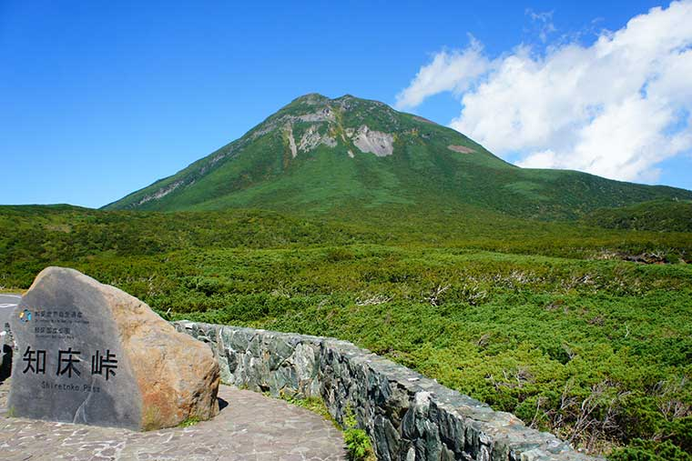
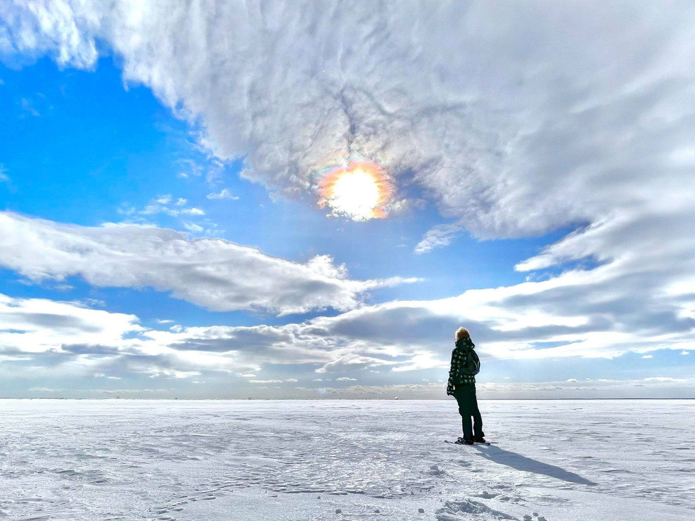

知床
流氷の海が育んだ豊かな自然と生態系の宝庫
『知床』

北緯約44度に位置する知床は、地球上の最も低い緯度で海水が結氷する季節海氷域にあたる。
オホーツク海にアムール川から淡水が流れ込むことで形成される塩分の薄い層は、シベリアからの寒気によって結氷し、流氷として知床沿岸に接岸する。
また、海から始まる食物連鎖は、トドやアザラシといった海生哺乳類はもちろん、河川を遡上するサケやマスを捕食するヒグマにキタキツネなどの陸上哺乳類も含んだ、
海と陸が連続する知床の得意な生態系を育んでいる。さらに知床には絶滅危惧種のシマフクロウやオジロワシが生息し天然記念物のオオワシの越冬地でもある。ヒグマの生息密度は世界で最も高い。
さらに、知床は世界遺産登録の際に、海域保全管理の徹底と、観光と自然保護管理の両立などが求められた。そこで、「知床世界遺産地域科学委員会」を立ち上げ、エコツーリズム
の活用などを含む科学的調査に基づく保全管理を実施しており、その活動が高く評価されている。
天に続く道
お楽しみへ向けて、自ら車を走らせる時間はいつだってワクワク。周囲には知床の山々などの大パノラマが広ります。
こだわりのレンタカーで車旅を満喫
北海道の壮大な自然や煌びやかな絶景が、移動時間でさえも大切な人との充実した時間に変えてくれるはず。
心に残る旅ごはん
旅のお楽しみといえば、グルメは欠かせない！知床が生んだ新鮮な海鮮を心行くまで満喫しよう！

冬の白銀の世界
冬の北海道と言えばこれ！『地平線』でも『水平線』でもない『氷平線』が醸し出す見渡す限りの白銀の大パノラマに浸りに行こう！